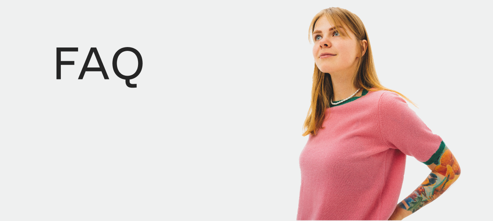
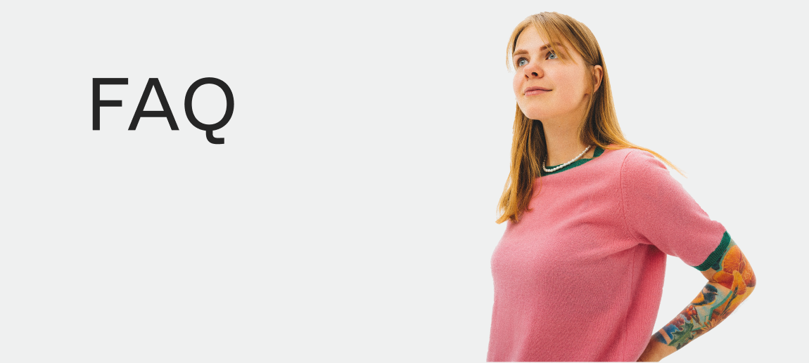

There are different ways of getting a design done. For myself, it has to be on the moment as such as prior the appointment. Creating a design on the spot is also where I can fully express creativity, understanding the concept and vision you have. I always do research and come with a design before we meet and it often comes alive after discussing it together. This means I do not send design before a booking.
I show the prepared design at the appointment day only.
I don’t send the design before the appointment!
On the day we will still be able to do changes and additions, and decide the best placement and size.
During the booking process via email, I always make sure to have all the details I need, so usually no modification or very little is required on the day.


 
